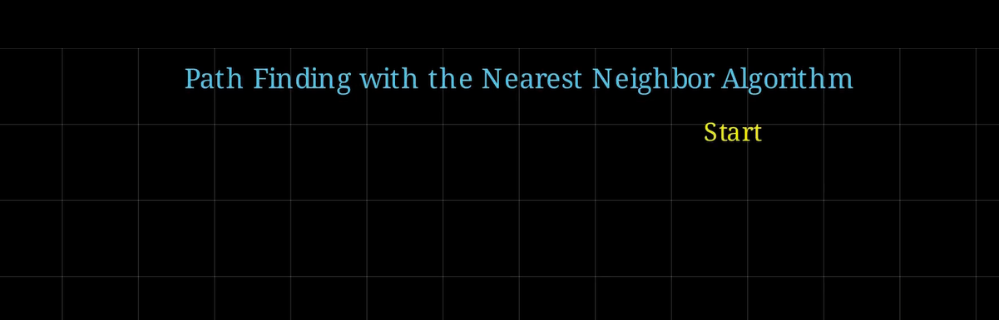
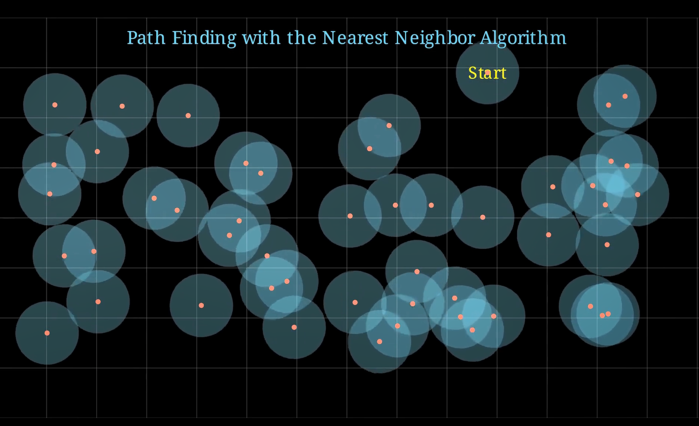
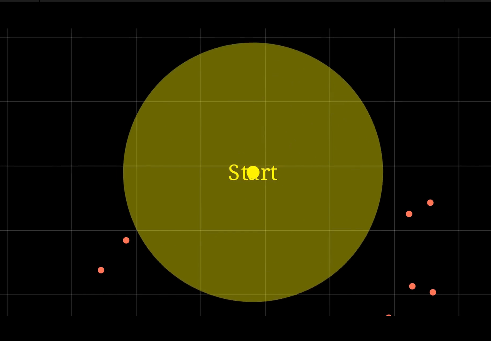
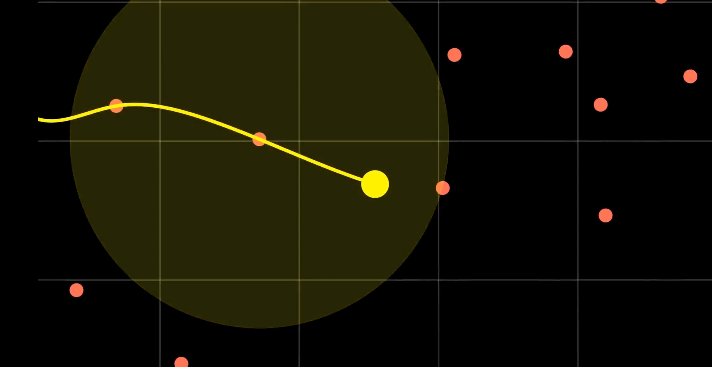
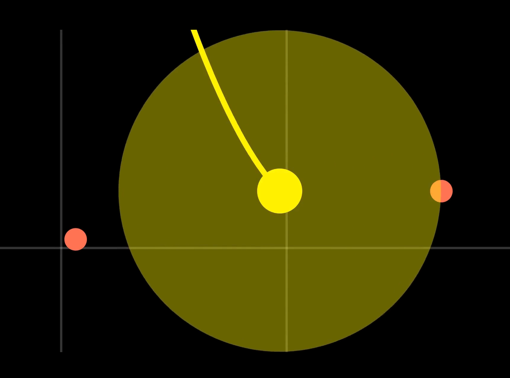
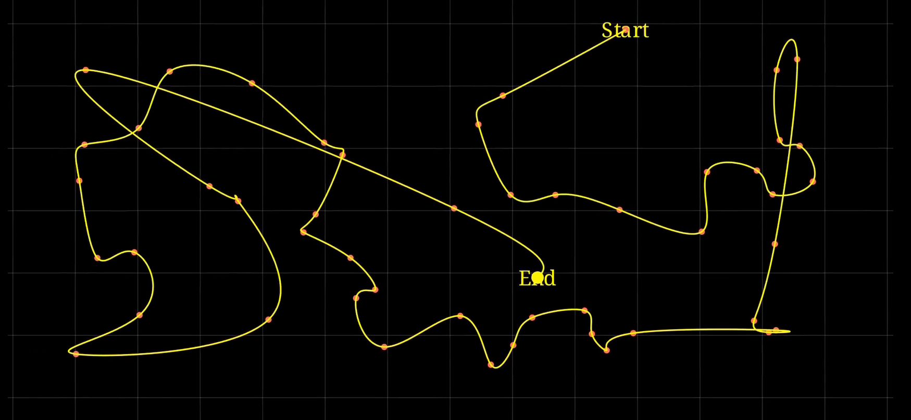
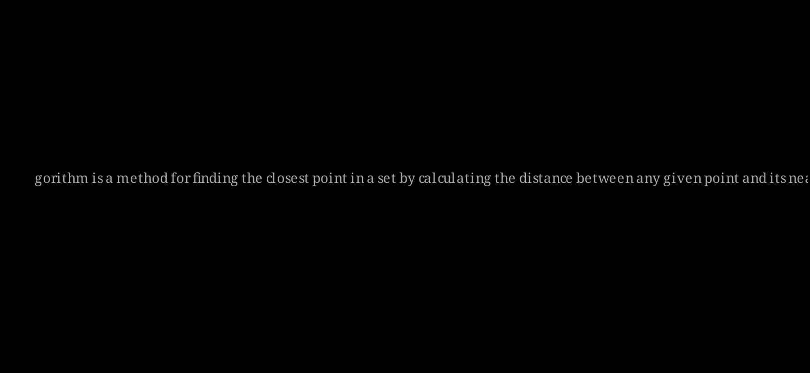

title: “Nearest Neighbor Pathfinding Algorithm” format: revealjs editor: visual —
Introduction
This animation visualizes the Nearest Neighbor algorithm using Manim by connecting a set of random points in a path that always moves to the closest unvisited point. It highlights the start, dynamically traces the path, and zooms the camera for better visual understanding. The algorithm is often used in routing, robotics, and clustering problems, especially for approximating solutions to the Traveling Salesman Problem where finding the shortest path through multiple points is essential.
Setup and Class Definition
from manim import *
class PathFinder(MovingCameraScene):
def construct(self):from manim import *: Imports all necessary components from the Manim library.PathFinderclass: Defines a new scene that supports camera movements.constructmethod: This is where we define the animation steps.
Title Display
title = Text("Path Finding with the Nearest Neighbor Algorithm", font_size=26, color=BLUE).to_edge(UP*0.5)
self.play(FadeIn(title))Text: Renders the title text.to_edge(UP*0.5): Positions the title near the top.FadeIn: Animates the text fading into view.

Closest Neighbor Function
def closest_neighbor(given_point, points):
points_array = np.array(points)
distances = np.linalg.norm(points_array - given_point, axis=1)
closest_index = np.argmin(distances)
return closest_index- Purpose: Finds the nearest point to a given one using Euclidean distance.
np.linalg.norm: Calculates the vector distance between points.np.argmin: Returns the index of the closest point.
Coordinate Grid
npl = NumberPlane(
x_range=[-30,30,1],
y_range=[-30,30,1],
background_line_style={
"stroke_color": WHITE,
"stroke_width": 1,
"stroke_opacity": 0.2,
},
)
npl.axes.set_opacity(0)
self.add(npl)NumberPlane: Draws a coordinate grid.- Styling: Sets a faint background grid.
- Hiding axes: The actual axis lines are hidden to reduce clutter.
Generating Points
pts = [(np.random.uniform(-6,6), np.random.uniform(-3,3), 0) for _ in range(50)]
pt2 = np.array(pts)- Generates 50 random 2D points.
z = 0: Maintains compatibility with 3D positioning in Manim.
Finding the Start Point
start = None
maxsum = 0
isodist = 0
for pt in pts[0:100]:
dists = np.sort(np.linalg.norm(pt2 - pt, axis=1))
sum = np.sum(dists[0:3])
if sum > maxsum:
maxsum = sum
isodist = dists[1]
start = pt- Goal: Find the point farthest from others (high isolation).
dists[0:3]: Looks at the closest 3 neighbors.start: Used as the initial point in the nearest neighbor search.isodist: Saved for visual radius later.
Nearest Neighbor Path Ordering
sorted_pts = [start]
pts.remove(start)
while len(pts) > 0:
idx = closest_neighbor(sorted_pts[-1], pts)
sorted_pts.append(pts[idx])
pts.remove(pts[idx])- Greedy nearest neighbor: Picks the closest unvisited point next.
- Builds the ordered path connecting all points.
Drawing the Circles
circs = VGroup(
*[Circle(radius=isodist, stroke_width=0, color=BLUE, fill_opacity=0.25).set_z_index(-2).move_to(pt) for pt in sorted_pts]
)- Visual flair: Faint circles represent search radius.
set_z_index(-2): Sends them behind other visuals.
Path and Dots
path = VMobject()
path.set_points_smoothly(sorted_pts).set_stroke(width=.05)
start_label = Text("Start", font_size=24, color=YELLOW).move_to(start)
self.play(FadeIn(start_label))VMobject: Draws the smoothed path using all sorted points.- Start label: Shows the starting location.
Displaying Points
for pt in sorted_pts:
dot = Dot(point=pt, radius=.05, color=RED)
self.add(dot)- Adds red dots for each point to the scene for clarity.
Circle Animation
self.play(
*[GrowFromPoint(circ, circ.get_center()) for circ in circs],
run_time=4,
rate_func=rate_functions.linear,
)
self.play(circs[0].animate.set_fill(color=YELLOW))- Circle growth animation: Fills the plane with popping radius visuals.
- Highlight start: First circle gets yellow fill to emphasize start.

Camera Zoom and Dot Movement
self.play(
self.camera.frame.animate.scale(0.25).move_to(path.get_start()),
*[FadeOut(circ) for circ in circs],
run_time=3
)- Camera zooms into the start.
- Fades out the visual clutter for focus.

Path Tracing
d = Dot(radius=0.10, color=YELLOW).move_to(path.get_start())
trace = TracedPath(d.get_center, stroke_width=2.5, stroke_color=YELLOW)
self.add(d, trace)- Yellow dot represents the “walker”.
TracedPath: Leaves a trail as the dot moves.

Animation Along Path
for pt in sorted_pts[1:]:
startprop = path.proportion_from_point(d.get_center())
endprop = path.proportion_from_point(pt)
radius = np.linalg.norm(d.get_center()-pt)
circ = Circle(radius=radius, color=YELLOW, fill_opacity=0.4, stroke_width=0).move_to(d.get_center())
self.play(
self.camera.frame.animate.scale_to_fit_height(2*radius)
)
self.play(GrowFromPoint(circ, d.get_center()))
self.play(
MoveAlongPath(d, path, rate_func=lambda t: startprop + t * (endprop - startprop)),
MoveAlongPath(self.camera.frame, path, rate_func=lambda t: startprop + t * (endprop - startprop)),
FadeOut(circ)
)- Dynamic travel: Dot and camera move to each next point.
- Yellow expanding circle indicates current transition.

Final Labels and Conclusion
endpoint_label = Text("End", font_size=24, color=YELLOW).move_to(path.get_end())
self.add(endpoint_label)
self.play(self.camera.frame.animate.scale_to_fit_height(8).move_to(ORIGIN), run_time=3)- Final label: Marks endpoint.
- Camera resets to overview.

Cleanup and Final Message
self.play(FadeOut(Group(*self.mobjects)))
final_text = Text(
"The nearest neighbor algorithm is a method for finding the closest point in a set...",
font_size=18, color=WHITE
).move_to(ORIGIN)
self.play(FadeIn(final_text, run_time=3))
self.wait(4)- Fades out all visuals for clarity.
- Displays explanation of the algorithm for viewer takeaway.

Task for the viewer
- Adjust the code and add new line to ensure the final text is displayed within the animation window.
Summary
- Created a point cloud and visual path.
- Animated nearest-neighbor traversal.
- Used Manim’s camera controls, animations, and TracedPath.